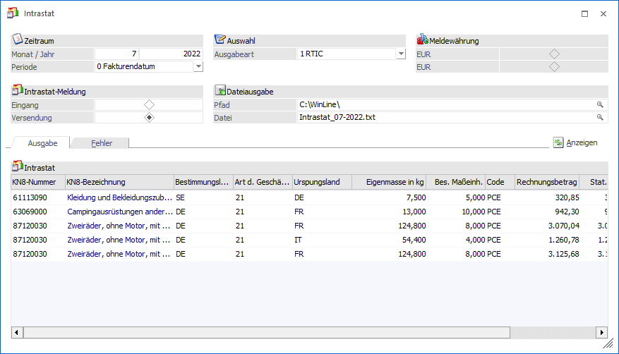
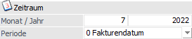
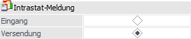
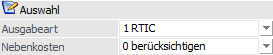
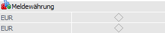
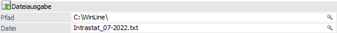
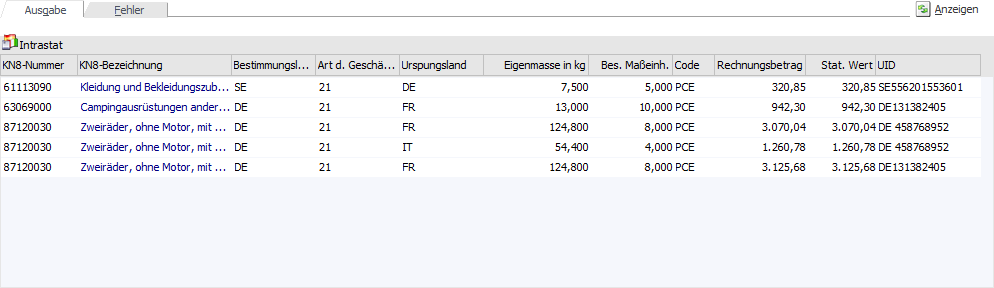
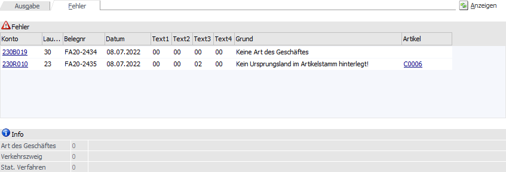
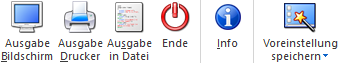
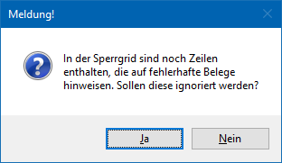

INTRASTAT ist ein permanentes statistisches Erhebungssystem zur Erstellung der Statistik des Warenverkehrs zwischen den Mitgliedsstaaten der EU.
Wer ist auskunftspflichtig?
Meldepflicht besteht grundsätzlich für jede Mehrwertsteuerpflichtige/jeden Mehrwertsteuerpflichtigen, die/der innergemeinschaftliche Warenlieferungen (Versand und Eingänge) - auch unentgeltlich - tätigt.
Diese Person verfügt allgemein über eine Umsatzsteuer-Identifikationsnummer (UID). Ebenso muss der innergemeinschaftliche Warenverkehr den jährlichen Schwellenwert erreichen oder übersteigen. Der Schwellenwert gilt pro Verkehrsrichtung. Dies bedeutet, dass eine Intrastat-Meldung ab dem Monat der Überschreitung der Schwelle im Eingang oder in der Versendung für die jeweilige Verkehrsrichtung nötig wird.
Wurde der Schwellenwert überschritten, müssen ab dem Monat, in dem die Überschreitung erfolgte, statistische Meldungen bis zum 10. Arbeitstag des Folgemonats an die Statistik Austria laufend monatlich abgegeben werden.
Schwellenwerte Stand April 2025
Österreich
ü Wareneingang: € 1.100.000,--
ü Warenversendung: € 1.100.000,--
Deutschland
ü Wareneingang: € 3.000.000,--
ü Warenversendung: € 1.000.000,--
Hinweis
Bei Überschreitungen des Schwellenwertes im laufenden Jahr müssen automatisch auch im folgenden Jahr Meldungen für jeden Monat abgegeben werden. Wird jedoch der Schwellenwert im folgenden Jahr nicht erreicht, endet die Meldepflicht automatisch im übernächsten Jahr.
Berichtszeitraum ist der Kalendermonat, in dem der innergemeinschaftliche Warenverkehr stattgefunden hat und die Mehrwertsteuer fällig geworden ist.
Wie funktioniert die Statistische Meldung in der WinLine FAKT?
Folgende Voraussetzungen müssen erfüllt sein:
ü Im Artikelstamm muss eine KN8-Nummer (=Zolltarifnummer) hinterlegt sein (WinLine FAKT - Stammdaten - Artikelstamm - Artikel - Register "Stamm" - Feld "KN8-Nummer").
Hinweis
Die Anlagen der KN8-Nummern erfolgt im Menüpunkt "WinLine FAKT - Stammdaten - KN8 Warenkatalog").
ü Im Artikelstamm muss ab dem Meldezeitraum 2022 auch für Exporte das Ursprungsland hinterlegt sein (WinLine FAKT - Stammdaten - Artikelstamm - Artikel - Register "Stamm" - Feld "Ursprungsland"). Alternativ hierzu kann das Ursprungsland auch in den Funktionscodes (WinLine FAKT - Stammdaten - Funktionscodes - Register "Intrastat" - Unterregister "Einstellungen") zugewiesen werden.
ü Im Personenkontenstamm muss ab dem Meldezeitraum 2022 für Exporte die UID-Nummer hinterlegt sein (WinLine FAKT/FIBU - Stammdaten - Konten - Personenkonten - Register "FIBU" - Feld "UID Nummer").
ü Im Belegerfassen-Hauptfenster muss im Feld "Versandland" (Einkauf) bzw. "Bestimmungsland" (Verkauf) ein Länderkennzeichen eingetragen sein, dass auch das Kennzeichen "EU-Staat" hinterlegt hat.
ü In dem Fenster "Funktionscodes" (WinLine FAKT - Stammdaten - Funktionscodes) müssen alle notwendigen Intrastat-Funktionscodes, sowie die Angabe zum eigenen Unternehmen, hinterlegt sein.
ü In den Belegkopftexten (WinLine FAKT - Stammdaten - Belegstammdaten - Belegkopftexte) werden in den gewünschten Versandarten die zutreffenden Funktionscodes (FC1 bis FC3) aktiviert.
ü Diese Versandart wird anschließend entweder fix im Personenkontenstamm (WinLine FAKT - Stammdaten - Konten - Personenkonten - Register "FAKT" - Feld "Belegkopftext 1 bis 4") hinterlegt oder durch eine manuelle Eingabe im Belegerfassen (Register "Text") zugeordnet.
ü Nur wenn der Belegstatus "Faktura" (Einkauf oder Verkauf) gedruckt bzw. gerechnet wurde, stehen die Werte in der Intrastat-Auswertung (WinLine FAKT - Auswertungen - Intrastat) zur Verfügung.
Hinweis
Gutschriften dürfen nicht in die Intrastat übernommen werden, da es sich um negative Werte handelt. Bei der "Verkaufs-Intrastat" dürfen nur positive Werte einfließen. Daher müsste in solch einem Fall der Kunde als Lieferant angelegt werden, damit dann die Werte in die Intrastat übernommen wird. Bei einem Storno geht man davon aus, dass die Ware wieder zurückgesendet wird und somit "nicht verkauft / exportiert" wurde. Daher muss die Intrastat um die Menge, Wert etc. verringert werden.
Weitere Infos und eine Dokumentation, was mit in die Intrastat fließen muss und was nicht, finden Sie im Erhebungsportal oder in dem Leitfaden zur Intrahandelsstatistik Link zum Leitfaden
Intrastat
Die Intrastat-Auswertung, über welche die Statistische Meldung ausgegeben wird, kann über den Menüpunkt…
1 WinLine FAKT
1 Auswertungen
1 Intrastat
… aufgerufen werden.

Anzeige

Ø Monat / Jahr
In diese Felder wird der Monat und das Jahr angegeben, für welche die Statistische Meldung ausgegeben werden soll.
Hinweis
Mit dem Eintrag
[Intrastat]
Mandantenperiode=1
in der Datei "mesonic.ini" wird in der Auswertung der Intrastatmeldung bei Auswahl des Monats der Datumsbereich berücksichtigt, der in den Periodendefinitionen im Mandantenstamm hinterlegt ist. Anhand dieser Periodendefinition erfolgt dann auch die Selektion der Belege die für die Intrastat relevant sind.
Beispiel
ü Im Mandantenstamm ist eingestellt, dass die Periode April von 02.04. bis 28.04. verläuft.
ü Es werden Rechnungen mit Rechnungsdatum 01.04., 02.04., 29.04 und 30.04. geschrieben.
ü Mit der Einstellung in der Datei "mesonic.ini" wird die Rechnung vom 01.04. in der Periode März, die Rechnung vom 02.04. in Periode April, und die Rechnungen vom 29.04. und 30.4. in Periode Mai angezeigt.
ü Ohne Hinterlegung des Eintrages werden alle 4 Rechnungen in der Intrastat in der Periode April ausgegeben.
Ø Periode
An dieser Stelle kann definiert werden, welche Periode der Belege für die Statistische Meldung ausschlaggeben ist. Folgende Einstellungen sind möglich:
ü 0 - Fakturendatum
Es wird
aufgrund des Fakturendatums (Rechnungsdatum) die Periode ermittelt.
ü 1 - Buchungsdatum
Es wird
aufgrund der zugewiesenen Buchungsperiode (Feld "Periode" im Register "Kopf" der
Belegerfassung) die Periode ermittelt.
Intrastat-Meldung

Ø Eingang / Versendung
Mittels dieser Option wird festgelegt, ob eine Intrastat-Meldung für den Wareneingang oder -versand ausgegeben werden soll.
Auswahl

Ø Ausgabeart
Mit Hilfe dieser Auswahl wird definiert, in welchem Format die Datei erzeugt wird. Die zur Verfügung stehenden Formate sind hierbei vom Landeskennzeichen des Mandanten abhängig.
ü Mandant mit Landeskennzeichen
"Österreich"
Grundsätzlich stehen in Mandanten mit dem Landeskennzeichen
"Österreich" die Formate "0 - EDIFACT" und "1 - RTIC" zur Verfügung. Für
Meldungen ab dem Berichtsjahr 2022 muss die Ausgabeart "1 - RTIC" verwendet
werden..
ü Mandant mit Landeskennzeichen
"Deutschland"
In Mandanten mit dem Landeskennzeichen "Deutschland" stehen die
Ausgabearten "0- -ASCII" und "1 - XML" zur Verfügung. Für Meldungen ab dem
Berichtsjahr 2022 muss die Ausgabeart "1 - XML" verwendet werden. Bei dieser
wird der Dateiname automatisch gebildet und kann nicht beeinflusst werden.
Ø Nebenkosten
Die Einstellung "Nebenkosten" steht nur bei der Meldungen des Typs "Eingang" zur Verfügung. Hierüber kann definiert werden, ob Artikelzeilen des Typs "9 - Nebenkosten" bei der Intrastat-Meldung berücksichtigt werden sollen oder nicht, wobei die Auswahl benutzerspezifisch gespeichert wird.
ü 0 - berücksichtigen
Die
Nebenkostenzeilen werden wie normale Artikelzeilen berücksichtigt.
ü 1 - nicht berücksichtigen
Die
Nebenkostenzeilen werden nicht berücksichtigt.
ü 2 - nur beim statistischen Wert
berücksichtigen
Die Nebenkostenzeilen erhöhen den statistischen Wert, nicht
aber den Betrag und die besondere Maßeinheit.
Meldewährung

Ø Meldewährung
Alle Meldungen ab dem Jahr 2002 müssen in der Landeswährung abgegeben werden. Bei Meldungen vor 2002 kann an dieser Stelle die Währung definiert werden, in welche die statische Meldung erzeugt werden soll.
Dateiausgabe

Ø Pfad / Datei
An dieser Stelle kann der Zielort bei einer Ausgabe nach "Ausgabe in Datei" hinterlegt werden.
Hinweis
Wird die Ausgabe in Form einer Dateiausgabe durchgeführt, dann müssen in dem Fenster "Funktionscodes" (WinLine FAKT - Stammdaten - Funktionscodes - Register "Intrastat" - Unterregister "Einstellungen") die Angabe zum eigenen Unternehmen hinterlegt werden, z.B. die Telefonnummer des Mandanten, die Authentifikationsnummer des Mandanten (Österreich) und die Materialnummer (Deutschland).
Hinweis (für Deutschland)
Bei der Ausgabe in Form einer XML-Datei wird der Dateiname automatisch gebildet (Materialnummer-Berichtszeitraum-Datum-Uhrzeit.xml) und kann nicht beeinflusst werden.
Anzeigen
Ø Anzeigen
Nach Anwahl des Buttons "Anzeigen" werden die Fakturen gemäß Selektion in der Tabelle "Ausgabe" oder "Fehler" aufgelistet. Sollte ein allgemeines Problem vorliegen (z.B. Zugriff auf den KN8-Warenkatalog ist nicht möglich), so wird ein entsprechendes Protokoll in den Spooler abgelegt.
Tabelle "Ausgabe"

Bis auf den Inhalt der Spalte "KN8-Nummer" können die weiteren Inhalte der Spalten verändert werden. Die Sortierung der Tabelle kann durch Anwählen der Spaltenüberschriften verändert werden.
Tabelle "Fehler"
In den Teilbereich "Fehler" wird automatisch gewechselt, wenn Fakturen für die Statistische Meldung vorhanden sind, diese aber nicht alle notwendigen Komponenten für die Meldung enthalten.

Die Informationsspalte "Grund" gibt Auskunft darüber, warum der jeweilige Beleg nicht in die Statistische Meldung übergeben werden kann. Folgende Ursachen können dabei vorliegen:
ü keine Preislistendefinition bei FW-Fakturen
ü fehlende KN8-Nummer
ü Fehler im Mandantenstamm
ü die Art des Geschäftes wurde nicht angegeben
ü kein Verkehrszweig
ü kein Stat. Verfahren
ü falsches Stat. Verfahren (z.B. in einem Ausgangsbeleg wurde ein Stat. Verfahren für den Eingang hinterlegt und umgekehrt)
ü Fehlendes Ursprungsland im Artikelstamm
ü Fehlende UID-Nummer im Personenkonto
Innerhalb der Tabelle können die Werte editiert und ggfs. fehlende Werte hinterlegt werden. Ebenso kann über die jeweilige DrillDown-Funktion in den Personenkontenstamm bzw. Artikelstamm (zur Hinterlegung der Werte) gewechselt werden.
Nach Anwählen des Buttons "Ausgabe Bildschirm" bzw. Taste F5 werden die korrigierten Fakturenzeilen in die Tabelle "Ausgabe" übergeleitet.
Buttons

Ø Ausgabe Bildschirm
Durch Anwahl des Buttons "Ausgabe Bildschirm" bzw. der Taste F5 wird die Statistische Meldung auf dem Bildschirm ausgegeben.
Ø Ausgabe Drucker
Durch Anwahl des Buttons "Ausgabe Drucker" wird die Statistische Meldung auf dem Drucker ausgegeben.
Ø Ausgabe in Datei
Die Statistische Meldung wird gemäß den Einstellungen unter "Pfad" und "Datei" abgespeichert. Sollte die Datei bereits existieren, so wird eine entsprechende Meldung ausgegeben.
Hinweis
Wenn zu dem Zeitpunkt der Dateierstellung noch Fakturen in der "Fehler"-Tabelle aufgeführt sind, dann erscheint folgende Hinweismeldung:

Ø Ende
Der Programmbereich "Intrastat" wird beendet.
Ø Info
Bei Anwahl des Buttons "Info" wird eine Liste auf den Bildschirm ausgegeben, auf welcher für jede Intrastatzeile die zugehörigen Artikelzeilen mit Eigenmasse, bes. Maßeinheit, Rechnungsbetrag und stat. Wert angezeigt werden. Die Rechnungsnummer hat eine DrillDown-Funktion, d.h. beim Klick auf die Rechnungsnummer wird die Rechnung angezeigt.
Ø Voreinstellung speichern
Durch Anwahl dieses Buttons erfolgt eine benutzerspezifische Speicherung aller im Fenster getätigten Einstellungen. Diese sogenannten "Voreinstellungen" können jederzeit wieder abgerufen werden und ermöglichen dadurch ein schnelleres und zielorientierteres Arbeiten (nähere Informationen entnehmen Sie bitte dem Kapitel "Die Voreinstellungen").